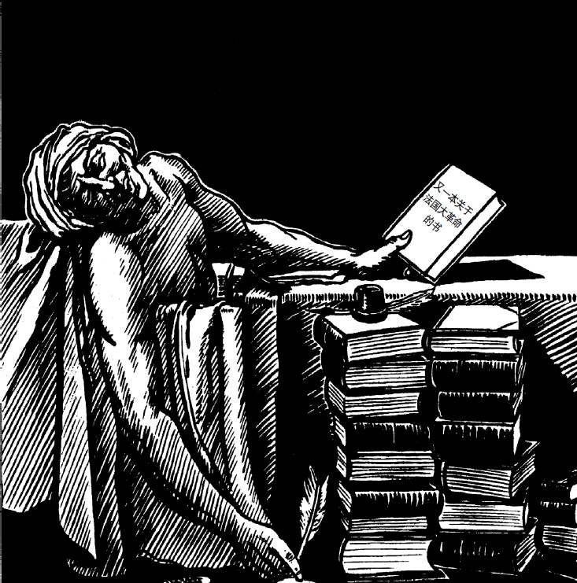

1789年6月27日，英国评论家阿瑟·扬在巴黎写道：“整个事态看来已经结束了，革命已经完成。”人们将不断重述同样的话，一般来说话中的希望多于确信；他们这样说了十年，直到拿破仑于1799年12月正式宣告革命结束。即便是在那个时候，他的意思也完全在于终结法国一系列令人震惊的事件，不过在随后的16年中，他将继续向外输出这类事件。此外，大革命不纯粹是一系列毫无意义的动乱。其中涉及的原则和理念之间的冲突，将贯穿19世纪，并随马克思的共产主义在20世纪的胜利而再度复苏。因此，当历史学家弗朗索瓦·孚雷于1978年在一篇著名的论文的开头宣称“法国大革命已经结束（terminée）”时，很多法国知识分子仍然深感恼怒。
孚雷的意思是，大革命现在已经是，或应该是一个历史研究的课题，就像研究墨洛温诸国王的中世纪史专家（他的榜样）面对其课题一样，应该超脱而平静地对待。不过，在20世纪的大部分时间里，法国人书写大革命史更像是纪念活动而非学术分析；革命史的正统性为一系列共产党人或其同道者掌握，这些人占据着大学体制。孚雷的攻击与其个人的经历交织在一起。他虽是索邦大学的毕业生，但一直鄙视大学学界，他的职业生涯是在其竞争对手高等研究实践学院（即后来的高等研究院，EHESS）展开的。年轻时他曾是共产党员，但像其他很多人一样，1956年苏联入侵匈牙利让他幻灭了，他退了党。当他与另一名退党者丹尼斯·里歇于1965年写下一部新的革命史时，这个领域的著名专家们异口同声地将他们谴责为冒失的闯入者，没有资格研究这个课题；他们提出的解释认为，大革命发生了“侧滑”，这是在诋毁大革命在目标和方向上的本质一致性。到1978年，孚雷抛弃了这个看法，但并没有消除这个看法引起的敌意。在余下的岁月里（他于1997年去世），他将这场攻击进行到底，尤其是在二百周年的论战期间。就在那一年年底，他高兴地宣布，他赢了。
被他打败的是什么呢？他称之为“雅各宾——马克思主义的圣经”。他的对手则称之为大革命的“经典”解释。其基本要点曾是（至今还是，因为虽然孚雷很得势，经典解释仍有支持者）确信大革命是一种进步的力量。作为启蒙运动的果实和辩护者，大革命以其坚定的民主政治行动，不仅要将法国人，而且要将整个人类从迷信、偏见、成规和不合理的社会不平等的桎梏中解放出来。这就是“雅各宾”的基石，它与1790年代无数的俱乐部分子的说法没有什么不同。作为一种历史解释，它建立在19世纪那些革命传统的守护者的工作之上；最著名的守护者也许是儒勒·米什莱，他是位歌颂“人民”的启示录式的作者。雅各宾主义的观点自信满满，唯一让它苦恼的是恐怖，它并没有试图为恐怖开脱，只是认为恐怖是种残酷的必要，是国家防御的本能反应。
大约在19世纪和20世纪之交，这种历史学中的雅各宾主义开始获得新的政治意蕴。从1898年开始，伟大的左翼政治家让·饶勒斯开始创作《法国大革命的社会主义史》，强调大革命的经济社会维度，并引入了马克思主义的分析要素。马克思本人几乎没有撰写过有关法国大革命的文字，但是，要把一场以攻击贵族和封建主义为开端的运动，融入一种强调阶级斗争、强调资本主义与封建主义冲突的历史理论，是件非常容易的事。从这种观点来看，法国大革命是现代史的关键时刻：资本主义的资产阶级推翻了旧的封建贵族。因此，大革命的根本问题是经济社会问题。在饶勒斯写作自己的著作的同时，富有攻击性的青年职业历史学家阿尔贝·马蒂厄为恢复罗伯斯庇尔的名誉而开始了毕生的战斗；他认为，在罗伯斯庇尔的恐怖统治之下，未来社会主义的理念已经展现出清晰的“先兆”。马蒂厄准备用自己的观点给整个大革命史学打上烙印；他作为一个法国人的热忱，从1917年起因俄国布尔什维克革命的榜样和启示而倍增，后者看来是要复活在1794年被背叛的许诺。罗伯斯庇尔的美德共和国将在列宁的苏维埃联盟复活。马蒂厄虽然只是短期内参加了共产党，但他建立了一个与此呼应的、属于自己的历史党派，这就是“罗伯斯庇尔研究会”。这个研究会的杂志《法国大革命历史年鉴》至今仍是专门研究大革命的主要法语期刊。从马蒂厄去世的1932年直到孚雷崭露头角，这个研究会及其成员支配着法国的大革命教学和写作——除了维希政权让它陷于沉默的那几年，它一系列的主要人物占据着索邦大学的大革命史讲席。孚雷发起论战时处于这个使徒名单上的人是终生的共产党人阿尔贝·索布尔（1982年去世），他很自然地把那些徒劳地泼向他自己信念的脏水称为“修正主义”。
但修正主义并非始于孚雷。它起源于1950年代的英语世界——在英国是阿尔弗雷德·科班，在美国是乔治·泰勒。在19世纪的英语文化中，很多伟大的思想者曾为法国大革命和拿破仑着迷，但在20世纪上半叶，这一兴趣流失了。一小批仍被这个课题吸引的历史学家对法国影响很小，他们在法国几乎不被承认。但是，第二次世界大战后，当西方民主制在国内外都受到马克思主义的挑战时，将近代史上的一些伟大片段从偏见和歪曲中解救出来就显得十分紧迫。科班和泰勒都决心与他们所称的法国“正统论”正面交锋。科班声称，1789年的革命者是资本主义的代言人一说是个谎言；摧毁旧制度的议员是官职所有人和地主。此外，泰勒论证说，革命前的大部分财产是非资本主义的；而且，就算存在这种资本主义，它对摧毁旧秩序也不感兴趣。实际上，这一摧毁工作远非扫清制约富有进取心的资产阶级的障碍，它是一场经济灾难，驱使所有人将资金投向土地。这些批判提出的问题涉及面很广，随后的1960—1970年代，英语国家的新一代学者根据这些线索的提示，沉入法国的档案馆以检验这类新假设。到1980年代，他们已基本摧毁有关大革命起源的经典解释的经验论基础，及其思想上的一致性。
法国人一开始对“盎格鲁——撒克逊人”仍抱有延续已久的鄙视，将泰勒和科班视作冷酷的斗士，认为他们对柏克读得太多，唯一的愿望就是诋毁大革命，将革命贬低为对西方资产阶级霸权的持续威胁。但是，当孚雷和里歇从狭隘的法语文化世界的内部对经典解释发起挑战时，罗伯斯庇尔主义者被迫进行防御。孚雷的英语没有问题，他在1970年代初开始将外国学者的发现和观点融入自己的解释中；他的解释的另一个来源是亚历克西·德·托克维尔（1859年去世），这位法国人在法国曾长期被忽视，但在英语世界很受重视。托克维尔认为，大革命意味着民主和平等的到来，但非自由的来临。拿破仑和他的侄子——这位出身古老世家的贵族很不喜欢他们——已经表明，独裁何以能在民主制的支持下建立起来，因为大革命已经扫荡了所有曾保障自由精神存活的制度，这些制度曾约束着国家权力的无情扩展。这些洞见让孚雷确信，大革命根本不是偏离正轨之后才走向恐怖。恐怖的可能从革命一开始就注定了：就在宣布民族主权原则、不承认民族共同体内部存在合法的利益冲突的时刻。尽管有各式各样的自由高调，大革命并不比旧君主制更能容忍反对派，现代极权主义可以在1789年和1794年找到源头。
这已经不只是修正主义了。科班、泰勒及追随他们的人，基本上是经验主义者；他们以新的证据削弱了经典解释那种笼统的社会经济论证，但他们很少想去建立新的宏大概论。他们所坚持的主要是：可以从政治、偶然性甚至意外等角度，对大革命进行更有说服力的解释。本书头几章所采用的基本是这种方法。但此类建议无法让更有抱负的人满意。当孚雷以大革命必然走向恐怖的立场和信念去描绘它时，其他人——主要在美国——以文化的视角寻求对革命行为作更为充分的解释。他们认为，1770—1789年的政治冲突中出现的众多“话语”，很大程度上为革命者毫不妥协的语言和主张奠定了基础。他们借用德国左翼哲学家尤尔根·哈贝马斯的思路，认为在大革命之前一代人的时期内，公共舆论脱离了国王的控制，在这一过程中，对君主制的尊重和敬畏逐渐消失了。孚雷觉得这种解释趋向甚至比早期的修正主义更为合适，于是他花在国外会议上、在美国逗留的时间越来越长，在这些场合下，致力于文化研究视角的又一代年轻学者已经把修正主义的胜利视为昨日的战斗。到1987年，这一潮流凝结为一个新的派别，并被贴上后修正主义的标签。
用以反驳经典解释的论说，至少有其内在一致性和可理解性。而后修正主义的“语言转向”日益受哲学家和文学理论家的影响，其著作十分晦涩，专业圈子外的读者很难理解。因此，当法国的社会党总统提前好几年发布命令，要求1989年的大革命二百周年必须被庆祝时，他将庆祝活动的学术工作委托给索布尔在去世前不久所说的“我们优良的古老传统”的捍卫者，后者仍然地位牢固。索布尔在索邦大学的继承人米歇尔·伏维尔被赋予协调全球性学术纪念活动的使命。他工作得十分努力，以至于最后医生们劝告他别干下去了。但从学术方面来说，二百周年就像更具公众色彩的活动一样，根本无法控制。尽管伏维尔和孚雷都在各个大陆参与巡回研讨会，但他们从未同时出现在一个讲坛上，孚雷及其追随者还抵制了伏维尔当年在巴黎举办的规模最大的会议。这很难说是孚雷在1978年似乎曾号召的学术中立立场。作为一个容易引起党派偏狭情绪的课题，大革命显然远没有结束，甚至对那些声称它已经结束的人来说也是如此。

图11 学者的重负：评论者对大革命二百周年纪念的反应（《每日电讯报》，1989年6月3日）
实际上，二百周年触发了成批的詈骂风格的著作问世，它们大多谴责大革命的某个方面，或谴责其遗产。在法国，为旺代叛乱者辩护的声音特别响亮；在大革命期间，这些叛乱者曾是法国国内最坚定的敌人，因而也成为最野蛮的镇压的受害者。虔诚的农民曾长期被斥为迷信的狂热分子，如今，他们在游击战中的英雄主义被深情地记录下来。天主教教士们提醒其教民，现代渎神论是从什么时候开始的。与此同时，在英语世界，数百场学术会议在梳理整整一代人的学术争论，而出版商和媒体也觉得有必要以某种方式来纪念一下二百周年；那年的一个轰动事件是西蒙·沙马的《公民》的出版，这是一本关于大革命的大部头的“编年”，但它几乎完全忽略了历史争论，其兴趣仅在于绘声绘色地讲述一段可怕的故事。全书的主旨是，进行革命是件荒唐事——幸好当时东欧人挑战苏联各卫星政权的革命遭受挫折。不过，在沙马那种狄更斯式的叙述背后，还是有某种思想立场的，它基本上与孚雷的立场一样。这本书中最有名的一句话声称，恐怖只是给1789年带来了更高的人口死亡统计，而“暴力……不仅仅是一个不幸的副产品……它就是大革命的集体力量的源泉。正因为如此，大革命才成其为革命”。沙马的故事在1794年随着罗伯斯庇尔倒台和恐怖的终结戛然而止，这一点意味深长。
大革命的经典解释者们最爱引用的祷文之一，出自第三共和国政治家乔治·克列孟梭，他在歌颂第一共和国的成就时说，大革命是一个整体（bloc）。应该完整地接受大革命的一切，包括恐怖在内。大革命不能被分解。修正主义强调偶然、意外，以及面对这些事件时切实存在的选择，如此则有其他所指——年轻的孚雷在和里歇一起谈论大革命的侧滑时，就是这种情况。只有像那个时代的人那样，在对即将到来的恐怖毫无意识的前提下去认识历史，弑君、非基督教化和断头台才不会给它们此前的历史投下阴影，亦不会覆盖其后发生的一切。然而，后修正主义者对这一视角背过身去。他们强调，文化限制因素决定着什么是历史行动者能够或不能够行动或思考的，从而开辟了一条通往决定论的道路，这种决定论与经典史学家的决定论并无不同，后者强调经济社会因素，而当时正是马克思主义影响的全盛期。孚雷在强调大革命从一开始就酝酿出恐怖时，便将恐怖视为判断这场运动的全部意义的关键问题。实际上，对于形形色色的后修正主义者来说，大革命仍然是一个整体，就和那些他们声称已经击败了的对手们的看法一样。
当然，这是一种新的整体。后修正主义强调恐怖的中心地位，这促使人们不仅全面谴责大革命，而且谴责任何纪念它的行动；不过与此同时，正如密特朗期待的那样，整个法国仍然到处是纪念人权诞生二百周年的庆典活动。伏维尔则一再重申，他对左翼价值观的信念可追溯到雅各宾主义，不过他拒绝承认与孚雷有任何形式的争论，只是温和地评论说，学术研究对任何观点开放。但是，除了少数坚定的共产党人，一度占支配地位的经典传统的支持者们，已从二百周年的历练中有所体会。1990年代，《法国大革命历史年鉴》开始小心翼翼地刊登非罗伯斯庇尔学会成员的论文，并且开始评论他们的著作，而不是简单地加以斥责。马蒂厄、索布尔和伏维尔的教席上，如今已是一位研究旺代的史学家。 [5] 自孚雷去世以来，有关雅各宾主义的一些新的同情性分析开始出现，但它们还是太急切地去否认这个看法：恐怖属于雅各宾主义的主流部分。然而，最沉重的打击不是来自学界的修正主义者和后修正主义者，而是来自苏联令人震惊的垮台。
至少从赫鲁晓夫1956年批判斯大林以来，人们不断意识到，苏联曾采取各种镇压行径。不过，在苏联表面看来仍很繁荣强大的日子里，人们可以争辩说，它的意识形态很管用，为了保障人民民主，过去的血腥行为是值得付出的一笔代价。同样的论说也曾用来证明1793—1794年恐怖的合理性，后来的亲雅各宾史学家们也曾这样做。但戈尔巴乔夫的统治表明，苏联这座宏伟大厦已难以支撑，也难以维系在东欧的姊妹共和国，此时幻觉便冰消瓦解了。70年来，这个政权承载着自罗伯斯庇尔倒台以来一再受挫的希望和梦想，但很难说它更加成功；跟深受它和它的朋友们尊敬的原型政权比起来，它付出的生命代价要沉重得多。如果这些政权是法国大革命真正的继承人，那么托克维尔和孚雷的看法就是正确的：大革命的意义不在于增进自由，而在于扩张国家权力。对理性化国家的美好前景的信念，是启蒙运动的第一个，也许是最后一个幻觉；从这个意义上说，法国大革命，以及随后两百年中的所有其他革命，都是其真正的继承人。当西方的历史学家在为如何，甚至是否纪念大革命的第二个百年而争吵时，这个幻觉已经消失了。
当然，极权主义人民民主并不是1790年代首次得胜的思想方式的唯一遗产。弗朗索瓦·密特朗在二百周年之际庆祝人权的决定，不只是一个注定失败的要将大革命的记忆同恐怖分离开的步骤。它同时也是在承认，人权意识形态比以前更为重要。独裁和屠杀的政权不能独占大革命的遗产。在现代宪政民主之下，公民的民事和政治权利得以保障，其生活机会在法律面前是平等的，在革命的遗产中，他们可以发现有很多东西是可以庆祝的。法国大革命的抱负十分宏大，革命之后的几乎所有人都能发现在其中有某些东西可以赞赏，或可以悲叹。大革命发起的战斗并非全都结束了。如果说共产主义的崩溃可以视为雅各宾派的失败，欧洲联盟看起来则很像一个吉伦特派的计划：把1789年的自由果实传播到整个欧洲。反过来说，这种理想遇到了民族主义本能反应的抵制，其中大多数的抵制首先是由来自革命法国的挑战而激发起来的。1987年，在二百周年的全部象征意义显现出来之前，一位杰出的文学批评家这样写道：“对1789年的某些主要后果的最苍白的列举”，
不过，最后一句话或许可以留给本书一开始时的那位作者。欧内斯特·沃辛说：“我亲爱的阿尔吉，全部的真理都是纯粹而简单的。”他的朋友回答说：“真理很少是纯粹的，而且绝不是简单的。”